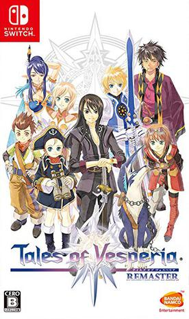

2018年10月 17 条
2018-10-31 12:07:46
 想看 尽情游戏 / Micmacs à tire-larigot
想看 尽情游戏 / Micmacs à tire-larigot
2018-10-28 16:41:21
想看 刀剑神域 爱丽丝篇 / ソードアート・オンライン アリシゼーション
2018-10-28 16:41:17
2018-10-28 16:35:22
想看 刀剑神域外传 暴风之铳 / ソードアート・オンライン オルタナティブ ガンゲイル・オンライン
2018-10-28 16:35:10
2018-10-21 16:48:17
看过 碟中谍6：全面瓦解 / Mission: Impossible - Fallout ★★★★★
画面场景比以前好看多了，选址nice！剧情ok，动作十分刺激
2018-10-21 12:17:22

2018-10-20 16:35:49
看过 蚁人2：黄蜂女现身 / Ant-Man and the Wasp ★★★★★
太过瘾了，和第一部一样，期待下一部，末尾化成灰是怎么回事啊！
2018-10-20 09:36:28
2018-10-20 09:35:43

2018-10-14 12:43:09
想玩 最后生还者 第二部 The Last of Us Part II
2018-10-14 12:35:37
玩过 最后生还者：遗落 The Last of Us: Left Behind ★★★★★
纯黑视频通关again，细节做得真是太好了，尤其是砸车玻璃和说笑话的部分
2018-10-13 15:37:44
看过 K歌情人 / Music and Lyrics ★★★★★
太感人了！！！！！！！！！！！！！！！！！！！！！！！！！！！！！！！！！！！！ //听到这个曲子Way Back Into Love (Demo)来搜的
2018-10-13 07:11:13

2018-10-06 06:29:14
 想看 马戏之王 / The Greatest Showman
想看 马戏之王 / The Greatest Showman
2018-10-03 19:19:48
 想看 垫底辣妹 / ビリギャル
想看 垫底辣妹 / ビリギャル
最近工作越来越轻松，或许是变成老油条了吧，每天下午都是塞一下午耳机写代码，效率也还行，但是发现了不少好歌，最近无限单曲循环的是这首《手纸 ~拝啓 绪五の君へ~》，听了好有感触，想了很多，泪目。嗯，然后就想补一下这个电影
2018-10-01 10:03:34

Tales of Vesperia